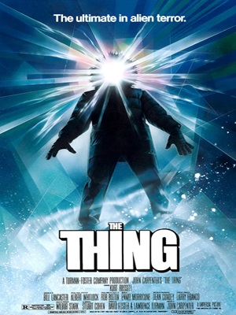
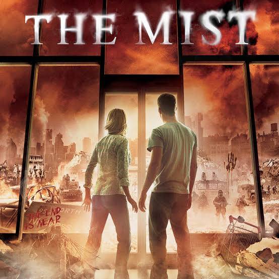
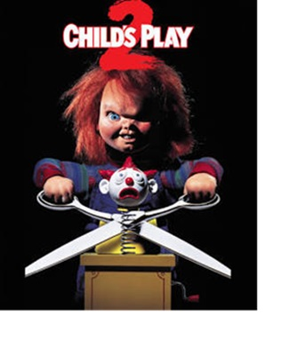

My Favorite Horror Movies
The reason for The Thing being one of my favorite "horror films" (horror adjacent) is because of the whole mystery aspect surrounding the characters, the whole time you are left wondering when a person could have turned if at all.
The reason for The Mist being one of my favorite horror films was due to the ending. Something about the psychological torment the character went through just for it all to be in vain will always live in my head rent free.
The reason for Child's Play 2 being one of my favorite horror films is because of nostalgia if I am being honest. Chucky was the first thing that ever terrified me from the ages of 4-8 and after that, I ended up loving the franchise with this being my favorite (at the moment).